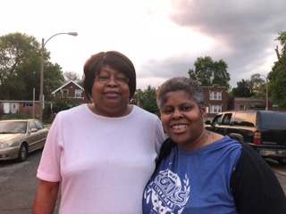
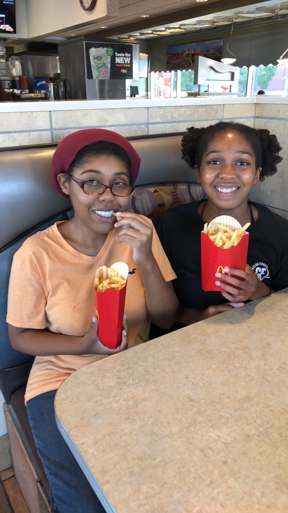

Sunday, August 5 was National Sister's Day 2018. It was also a relaxing day of simple pleasures for three sets of sisters.
A sister is more than a forever friend.
She's a joy to the heart
And love without end.
Barking and giggling. Giggling and barking. That's how I wake up every morning. "Take those bitches out for a walk,"I say to Patrice, my oldest daughter, as I roll over and see her stroll past my room. "Patra too?" she asks. "You know I didn't mean your sister," I reply. Making my way towards the living room, I see a 45 lb samoyed and 15 lb pekingese wrestling for the spot on the floor next to my youngest daughter.
"It's National Sister's Day," Patra exhales between sit-ups.
"Great! That gives you and your sister a good excuse to brush Snowie and Lola and give them baths before you take off this morning.
"I didn't say National Give Your Dog a Bath Day,"Patra replied.
"No, you didn't. But since they're siblings, spruce them up and give them a lot of TLC before you and your sister run off today."
"Well, since Patrice and I are going to be bathing dogs and going to work, what will you be doing today?"
"I'm going to go back to sleep and then meet up with my sister."
Back in my bed lazily falling asleep to the sweet sounds of my girls arguing and laughing and barking and yapping and splishing and splashing on the morning of National Sister's Day 2018.
Clean kitchen, and as many other cleaning tasks as can fit into an hour. This leaves 1/2 hr for me to get ready for my sister, Lynn, to pick me up at 11:00. Our pre-arranged date was set for 11:00 but sister is always late and I've learned over the years to calculate that in.
Dressed. But still waiting. Sis is nowhere to be seen. Oh well, she has a lot of other wonderful qualities. So I call. On her way. Good.
"So Lynn, did you know it's National Sister's Day?"
"No, but sounds like a good reason to celebrate! How bout lunch and a movie? Mai Lee's?"
Like I said, Sis may always be late but she makes it worthwhile.

I'm Not Just a Sister.
I'm a Big Cup of wonderful
Covered in Awesome Sauce
With a Splash of Sassy
and a Dash of CRAZY!
Meet up with Lynn for lunch and then 1:30 showing of Mission Impossible - Fallout. Not exactly a movie promoting the bonds of sisterhood but we both Luuuuv special effects.
Swing over to the Delmar Loop for Art Exhibit at Craft Alliance. Patrice has a sculpture on display. Lynn doesn't know but is quite pleased to see "First in Clay" next to "Imperial Ibis." We leisurely walk through and view the other works then stop by the gift shop.
We wait until 4:00 to meet Patrice in the Clay Studio next door. She's been there since 11:00 and is now cleaning up. Lynn congratulates her. Patrice introduces us to a few friends at the studio. We help her finish clearing her spot. Lynn is running late for an appointment. We say good byes.
Patrice and I decide to surprise Patra at the health club where she works. Take the Metro Link and after a short walk, we arrive at club Fitness.

When sisters stand shoulder to shoulder,
Who stands a chance against us?
Patra doesn't get off till 6:00. So she gives us a tour then fixes her sister a high protein smoothie. Patrice and Patra chat animatedly front desk while I walk on the ellipticals since I have a membership ship.
We all check our McDonald's Apps and discover Free Fries today! Free large fries! We all love McDonald's french fries so we don't deny ourselves this simple pleasure. It's a short walk around the corner so we place our orders. Sitting around shooting the breeze, I decide to snap a a picture of the these two sisters eating fries and shooting the breeze on this special day.
We catch the Metro and transfer to one bus to get home, taking forever because trains and buses run slow on Sundays.
Arrive home. Let Lola and Snowie in. Finish up the evening playing Scrabble with my girls as their dogs lay at our feet.
Wash-up and Turn in. Loved my lazy, quirky day.